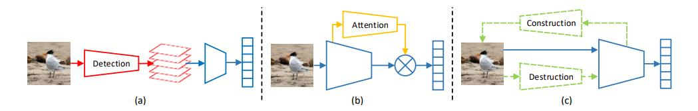
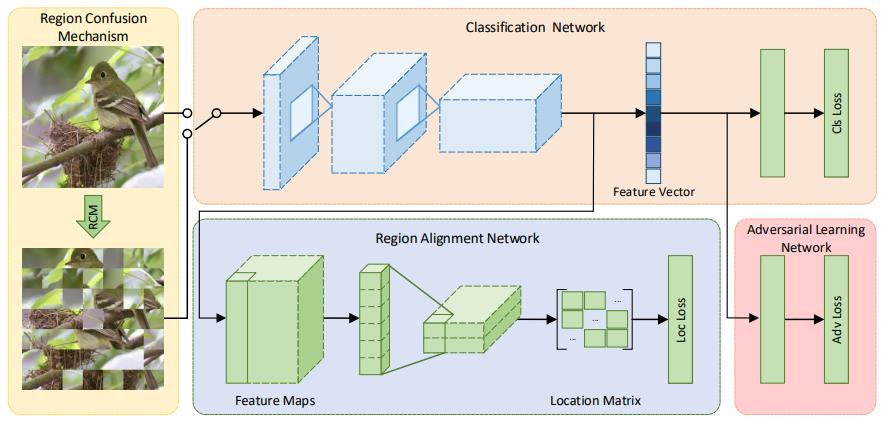
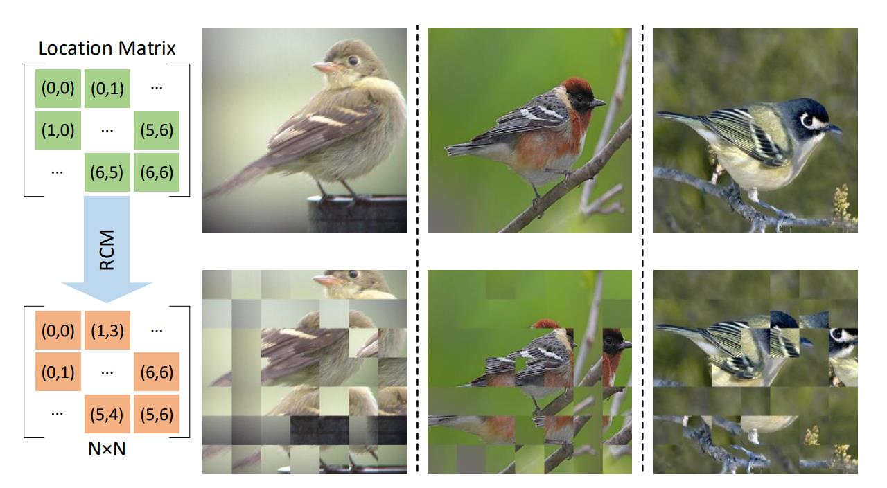
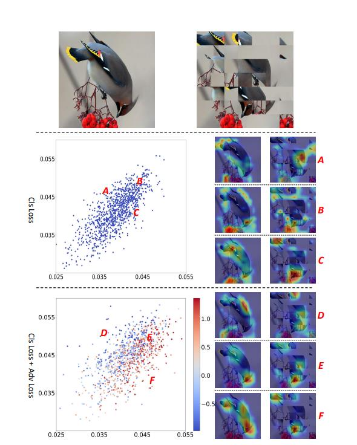
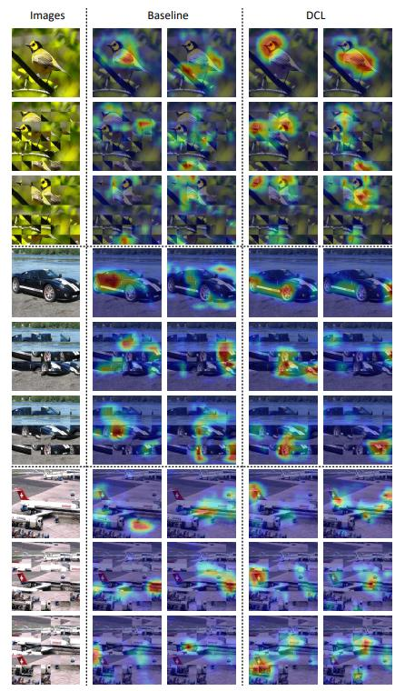
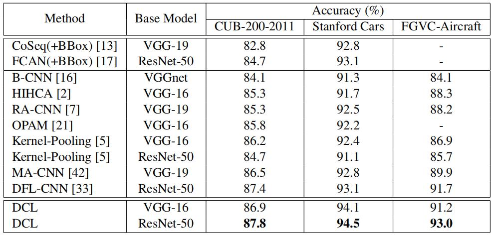

细粒度：DCL¶
综述¶
会议时间：IEEE Conference on Computer Vision and Pattern Recognition 2019 (CVPR, 2019)
源码地址(PyTorch版本)：https://github.com/JDAI-CV/DCL
针对领域：细粒度图像分类(FGVC)
主要思想¶
在有辨识力的区域(discriminative parts)学习辨识力特征(discriminative feature)对细粒度图片分类具有重要的意义。现有的细粒度识别方法大致可以分为两类：①首先定位物体具有辨识力的部位，并且再基于这些部位做进一步的分类(如下图的a)，但这种方法往往需要额外的人力标注，增加了训练成本；②尝试通过注意力机制以无监督的方式自动的定位有区别的部位(如下图的b)，但这种方法往往需要额外的网络结构，增加了计算开销。
本文中，作者提出了一种新的细粒度识别框架——“破坏和构造学习”(Destruction and Construction Learning)(如下图c)。除了标准的分类网络之外，作者还引入了DCL结构来自动地在有辨识力的区域学习。输入图像首先被破坏，从而让网络学习里面的局部细节，之后再将他们重构，让网络去学习区域之间的语义相关性。

对于“破坏”，作者提出了区域混淆机制来故意“混淆”全局的结构，该机制首先将输入的图片划分成局部的小区域，之后再将它们随机地打乱。对于细粒度识别，局部细节要比全局结构起着更重要的作用，随机打乱可以使图片丢弃全局结构，并保留局部的细节，从而迫使网络在有识别力的局部区域进行识别。但使用RCM打乱图像的同时，会让图像的外观发生实质性的变化，提高了识别的难度，因此，网络需要挖掘图像中的细节差异来对破坏的图像进行分类。
但学习打乱后的图像并不都是有益的，打乱图像的同时，会引入一部分不确定的噪声视觉模式(noisy visual pattern)，为了抵消负面影响，作者设计了一种对抗损失，让噪声模式的影响最小化，仅保留对分类有益的局部细节，过滤无关因素。对抗损失与分类损失以对抗性的方式工作，以便从破坏的图像中仔细学习差异。
对于“构建”，引入了区域对齐网络来恢复原始区域的排列，通过学习如何复原图像原始的布局，可以让网络理解每个区域的语义，便于对不同局部区域之间的相关性进行建模。
网络结构¶
网络结构图如下图，主要由四个模块组成：①区域混淆机制(Region Confusion Mechanism)：随机打乱输入图像的局部区域；②分类网络(Classification Network)：将输入的细粒度图像进行特征提取，最后传入全连接层预测类别概率；③对抗学习网络(Adversarial Learning Network)：设置对抗损失，用于区分是原始图像还是打乱后的图像；④区域对齐网络(region alignment network)：附加在分类网络之后，用于恢复空间局部区域的空间布局。四个模块同时参与训练过程，而在测试过程中，只需要使用分类网络对原始图像做出类别预测。

“破坏”学习¶
对于细粒度图像分类来说，局部的细节要比全局的结构重要很多，大多数情况下，细粒度类别通常拥有相似的全局结构并且仅在局部的细节上表现出差异来。本文中，作者提出了一种通过打乱局部区域来破坏全局结构的方法(称为RCM)，可以更好地区分局部有辨识力的区域以及学习其中的辨识力特征。进一步地，作者又设计了一种对抗损失，来防止网络学习打乱图像中的噪声模式。
区域混淆机制(RCM)：
与自然语言处理做类别，打乱一个句子中单词的顺序，可以让网络去关注有辨识力的单词，并且忽略掉无关的单词。类似的，打乱图片的局部区域，同样可以让网络去学习局部区域中对最终分类有贡献的细节，本文中作者采用相邻打乱策略(每个小区域在相邻位置变动)。
首先得到原始输入图像I，将其平均划分成N×N个小区域，将其命名为：
对于R中的第j行，生成一个尺寸为N的随机向量q_j，其中第i个元素q_{j,i}=i+r，r\sim U(-k,k)服从于[-k,k]内的均匀分布，k是可调节的超参数(1≤k<N)，决定了局部区域变动的范围，k越大，每个局部区域偏离当前位置的范围就越大(换句话说k越大，图片打乱的力度就越大)。之后，利用得到的随机向量q_i对第j行进行重新排列，得到了一组新的排列\delta^{row}_j，验证如下：

原始图像I、相应被打乱的图像\phi(I)与标签l同时用于网络参数的训练，分类网络将图像映射到相应的概率分布向量C(I,\theta_{cls})，其中\theta_{cls}表示分类器的参数，之后利用交叉熵损失函数计算得到分类损失L_{cls}，进一步利用该损失优化网络：
对抗学习：
利用RCM打乱原始图像并不总是得到对细粒度分类有益的信息，在打乱原图的同时，也许会引入一些视觉上的噪声模式(如上图，被打乱的图像与原图具有不同的模式布局)，学习这些噪声模式的特征，会影响对完整图像的分类预测。为此，作者提出了一种对抗损失L_{Adv}，用于防止RCM引起的噪声模式“偷偷进入特征空间”。
考虑到原始图像与被破坏的图像属于两个不同的领域(一个是完整的领域、一个是不完整的领域)，因此对抗损失与分类损失以对抗的方式去解决如下两个问题：①保持各自领域不变；②拒绝I与\phi(I)之间领域的特殊模式。(换句话说就是让网络能够清楚的分开两个领域的图像，可以正确地判断图像是被破坏的图像\phi(I)还是未被破坏的图像I)
因此，作者为每张图片额外的生成一个标签d\in\{0,1\}^2，该标签表示了图片是否被破坏，1表示图片未被破坏，0表示图片被破坏。作者又在网络中增加了一个新的判别器(discriminator)分支，用于判断图片I是否被破坏：
为了更好地理解对抗损失调整特征学习的过程，作者进一步将两组主干特征提取网络输出的特征可视化，分别是带有对抗损失训练和不带对抗损失训练得到的网络。给一个输入图像I，作者将m层输出的第k张特征图命名为F^k_m(I)。对于ResNet50，作者提取了最后一层池化层输出的特征向量(全连接层的输入)用于可视化展示，倒数第一层卷积层中，第k个过滤器(filter)对真实标签c的特征响应表示为：
其中，\theta^{[m+1]}_{cls}[k,c]表示为第k张特征图与标签类别c之间的权重(全连接层中的权重)
作者计算了不同过滤器对原始图像和被破坏的图像的响应值，并且画出了散点图，每个带有积极响应的过滤器都被映射到了散点图中，坐标为(r(I,c),r(\phi(I),c))(横坐标表示对原图的响应，纵坐标表示对破坏后图像的响应)。如下图所示，仅通过分类损失(L_{cls})训练得到的过滤器在散点图上的响应点更加密集，这意味着在被破坏的图像学习到的噪点模式(边缘风格的视觉模式或由RCM引入的不相关的视觉模式)对原图(具有完整物体的模式)的分类有比较大的影响，有可能会误导预测结果。因此需要加以处理，让网络区分出该图是原图还是被破坏的图，进一步过滤被破坏的图像中不相关的视觉模式。
作者进一步将利用L_{cls}+L_{adv}结合训练得到的过滤器所绘制的散点图上的点标注上颜色，按特定数值上色，从蓝到红的过渡代表数值从低到高的变化，散点图颜色数值计算公式如下：

上图中，分别可视化了由L_{cls}训练和由L_{cls}+L_{adv}训练得到的过滤器。第一行展示了原始图像I和被被破坏的图像\phi(I)。右边的2、3行分别展示了两种过滤器对I和\phi(I)的响应。右边分别展示了可视化后的特征图。散点图中，A,D：过滤器对\phi(I)具有高响应；C,F：过滤器对I具有高响应；B,E：过滤器对I和\phi(I)都具有高响应。
L_{cls}与L_{adv}共同构成破坏学习，让网络不仅可以增强局部辨识力的学习，还可以过滤掉无关的特征。
“构建”学习¶
考虑到相关区域的组合构建了复杂多样的视觉模式，作者又设计了一种模型学习方法来建模局部区域之间的相关性。具体地，作者提出了一个利用区域对齐损失L_{loc}优化的区域对齐网络，该网络测量图像中不同区域的位置精度(对原图做一个重构)，通过端到端的训练，可以让骨干网络(backbone network)对区域之间的语义相关性进行建模(学习不同区域位置间的关联)。
给出一张图片I和对应破坏的图片\phi(I)，图片I中坐标为(i,j)的区域R_{i,j}对应于图片\phi(I)中的区域R_{\delta(i,j)}，区域对齐网络处理分类网络C(·,\theta^{[1,n]}_{cls})中一个卷积层的输出特征，其中n表示分类网络的层数。输出的特征经过一层卷积核尺寸为1\times 1的卷积层，将原特征图压缩成通道为2的特征图，并且不改变原图的大小，之后再将得到的特征图依次经过ReLU激活、平均池化层下采样，得到尺寸为2\times N\times N的对齐图，对齐网络的输出可以用如下公式表示：
训练与测试¶
训练过程：在该网络结构中，分类损失、对抗损失以及区域对齐损失共同参与到网络端到端的训练过程中，使网络可以利用增强的局部细节和建模良好的对象部件来进行细粒度的识别，最后总的损失计算公式为：
测试过程：测试过程只需要将原图输入到分类网络，利用参数$f(·,\theta^{[1,l]}_{cls})来对原图的类别进行预测，因此，除了主干分类网络用于计算之外，无需额外的计算开销。
实验¶
可视化分析¶
为了进一步证明DCL的有效性，作者将基线方法(只有分类网络)与DCL网络得到的特征图做了比较，对比图如下，可以看到DCL产生的特征图更能集中在判别区域，经过随机的破坏，网络也一致的突出有辨识力的区域，这进一步证明了DCL具有良好的鲁棒性。

精度对比¶

总结¶
本文提出了一种用于细粒度分类的DCL网络。首先通过破坏学习，提高了识别的难度，从而引导网络学习细粒度识别中的专业知识(细节差异)。而构建学习可以模拟物体各部分之间的语义关联，从而引导网络学习物体各部分之间的相关性。同时，该网络在测试过程中只需要将图片传入主干特征提取网络中进行分类预测，计算量小，具有很好的实用价值。
注：以上仅是笔者的个人观点，若有错误，欢迎大家批评指正。
最后一次修改日期：2021年12月11日